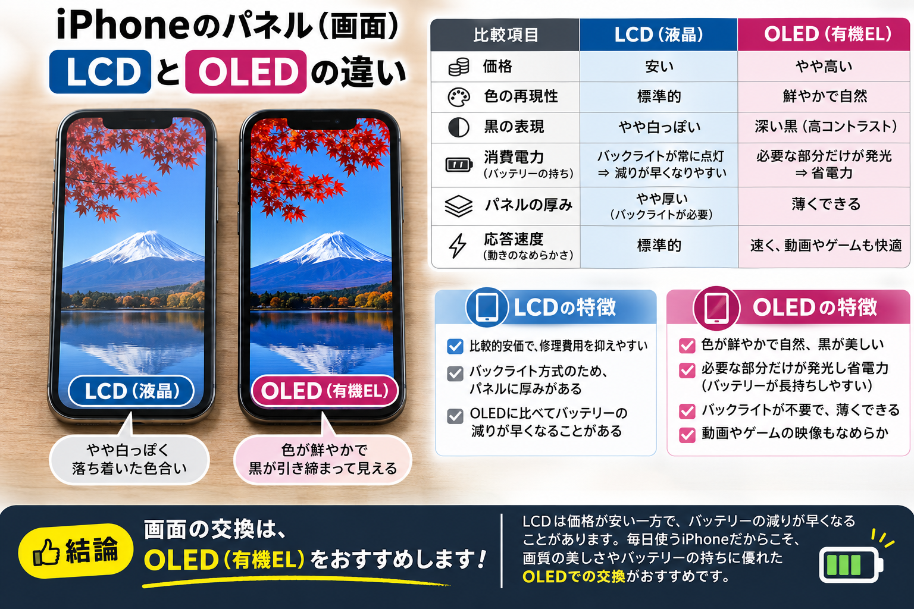

iPhoneの画面が割れて交換を検討するとき、「LCD」と「OLED」という言葉を目にしたことはありませんか？同じ画面交換でも、使うパネルによって見え方や価格、使い心地が変わります。
今回は、大分市都町のRepair540が、iPhoneの画面交換で知っておきたいLCDとOLEDの違いを解説します。「iPhoneの液晶交換」と呼ばれる修理でも、機種によっては液晶ではなくOLED（有機EL）が使われています。
LCDとOLEDは、光の出し方が違います
LCD（液晶）は、背面のバックライトの光を液晶で調整して映像を表示する方式です。黒を表示する際もバックライトが点灯しているため、光を完全に遮りきれず、暗い場所では黒が少し白っぽく見えることがあります。
OLED（有機EL）は、画素そのものが発光する方式です。黒い部分の画素を消灯できるため、深い黒を表現できます。バックライトが不要で、薄いパネルに設計しやすいのも特徴です。
OLEDのメリット：画質・薄さ・応答速度
色の再現性と、引き締まった黒
適切に設計・調整されたOLEDは、広い色域と高い色精度を実現できます。画素を消灯して表す黒はコントラストが高く、写真や動画の暗い部分も引き締まって見えます。ただし、色の正確さはパネルの品質や調整にも左右され、「OLEDなら必ず自然な色」というわけではありません。
暗い表示では省電力につながることも
OLEDは発光する画素や明るさに応じて電力を使うため、黒の多い画面やダークモードでは消費電力を抑えられる場合があります。一方で、白の多い画面を高い輝度で表示すると、電力が多く必要になることもあります。
OLEDが常にLCDより省電力とは限りません。表示内容、画面の明るさ、パネルや駆動回路の効率、リフレッシュレートなどで変わります。スマートフォン全体の電池持ちは、通信、アプリの動作、バッテリーの劣化にも左右されます。
薄く設計しやすく、画素の応答が速い
バックライトのないOLEDは薄型化しやすく、画素の切り替えが速い点もメリットです。動きのある映像の表示に向いています。ただし、画素の応答速度とリフレッシュレートは別の性能です。OLEDへの交換だけで120Hz表示やProMotionへの対応が保証されるわけではありません。
LCDのメリットは、比較的費用を抑えやすいこと
LCDの互換パネルは、同じ機種向けのOLEDパネルに比べて比較的安価な場合があります。修理費用を重視する方にとって選択肢になりますが、価格差は機種・部品の品質・供給状況によって異なります。
もともとLCDを採用しているiPhoneでは、その機種に合うLCDを選ぶのが基本です。OLEDをおすすめするのは、主にもともとOLEDを搭載しているiPhoneの画面交換についてです。
LCDとOLEDの比較表
一般的な傾向をまとめています。スマートフォンでは表を左右にスクロールできます。
| 比較項目 | LCD（液晶） | OLED（有機EL） |
|---|---|---|
| 表示方式 | バックライトの光を液晶で調整 | 画素が自ら発光 |
| 価格 | 比較的安価な場合が多い | 比較的高価。品質でも異なる |
| 色の再現性 | 品質・調整によって良好な発色も可能 | 広色域や高い色精度を実現可能。品質・調整に依存 |
| 黒の表現 | 光漏れで白っぽく見える場合がある | 画素を消灯でき、深い黒を表現 |
| 消費電力 | バックライトの明るさなどに依存。交換で必ず消耗が増えるとは限らない | 暗い表示では省電力になりやすいが、常にLCDより省電力とは限らない |
| 薄さ | バックライトの分だけ厚みが必要 | 薄く設計しやすい。交換部品の寸法確認は必要 |
| 応答速度 | 液晶の切り替え速度に依存 | 画素の応答が速い傾向。リフレッシュレートは別 |
| 注意点 | OLED搭載機への装着は表示・機能・適合性を確認 | 品質差があり、長時間の固定表示などで焼き付きの可能性 |
OLED搭載iPhoneにLCD互換パネルを付けるときの注意点
対応をうたうLCD互換パネルでも、元のOLEDと同じ表示品質や機能を再現できるとは限りません。交換前に、次の点を確認しましょう。
- 見え方：黒の深さ、色味、明るさ、視野角、HDR表示などに違いが出る場合があります。
- 本体との適合：厚みや取り付け精度、タッチ操作の反応などは製品によって異なります。対象機種への適合確認が必要です。
- 機能：True Tone、自動輝度調整、ProMotionや常時表示への対応、部品に関するメッセージの有無は、機種・部品・修理手順によって変わります。
- 消費電力：パネルや駆動回路の設計によって変わります。LCDへの交換が必ずバッテリー消耗を増やすわけではありません。
Appleも、非純正ディスプレイではタッチや明るさ、色、バッテリー消耗などに問題が生じる可能性を案内しています。これはLCDだけの問題ではなく、互換OLEDでも品質や互換性の確認が大切です。
OLEDにも品質差があります
「OLED」と書かれていれば、すべて同じ品質というわけではありません。純正部品と互換部品の違いに加え、互換OLEDでも、明るさ、色の調整、解像度、タッチ精度、消費電力、耐久性、対応機能などに差があります。OLEDという方式だけで、純正と同等の性能を保証することはできません。
また、OLEDには長時間の固定表示などによって焼き付きが生じる可能性があります。交換時は、部品の種類と仕様、保証条件、修理後の表示・操作確認についても相談しましょう。
Repair540がOLEDパネルをおすすめする理由
Repair540では、もともとOLEDを搭載したiPhoneの画面交換には、機種に適合し、品質を確認できるOLEDパネルをおすすめします。深い黒やコントラスト、薄さ、応答性といった元の表示方式の特徴を大切にしたいからです。
おすすめする理由は「必ず電池が長持ちするから」ではありません。毎日見る画面だからこそ、価格だけでなく、見え方や操作感、対応機能も含めて選んでいただきたいと考えています。費用を重視する場合も、違いを確認したうえでご相談ください。
iPhoneの画面交換・液晶交換はRepair540へ
画面割れ、表示不良、タッチの不具合でお困りの方は、大分市都町のRepair540へお気軽にご相談ください。ご相談の際は、iPhoneの機種名・症状・ご予算をお知らせいただくとスムーズです。
料金は修理メニュー・料金表をご確認ください。パネルの種類や在庫、修理時間については事前にお問い合わせください。ご来店前のアクセス確認、お問い合わせ、遠方からの郵送修理もご案内しています。
関連記事
参考情報
- Apple：iPhoneのSuper RetinaディスプレイやSuper Retina XDRディスプレイについて
- Apple：iPhoneの純正ディスプレイについて
- Purdue University：OLEDのダークモードと消費電力に関する研究紹介（英語）
2026年11月7日確認。上記は表示方式などの参考情報であり、当店の交換部品の性能を保証するものではありません。